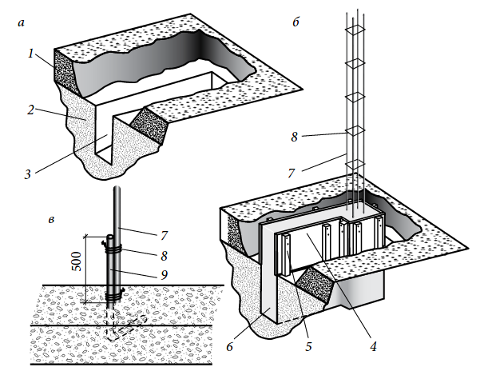
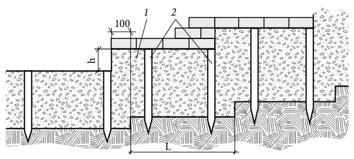

В якості фундаменту для невисоких стін в пів цегли в районах, де не буває зимового пучення грунту, можна порекомендувати бетонну стрічку висотою 100-150 мм і шириною 300 мм.
Для стін в одну цеглу заввишки до 1 м товщина фундаменту зростає до 225-300 мм при ширині 450 мм (дві ширини стіни). Для більш високих (1,8—2 м) стін в одну цеглу глибина фундаменту має бути 375-450 мм при ширині стрічки від 450 мм до трьох товщин стіни. Фундаментна стрічка повинна мати можливість розширюватися, для чого в ній необхідно влаштовувати вертикальні щілини через кожні 10-15 м.
При складних грунтах глибина закладення стрічки фундаменту під цегляний паркан залежить як від властивостей конкретного ґрунту, так і від загальної ваги встановлюваної споруди. Якщо підошва фундаменту лежить нижче межі промерзання, на нього не буде впливати зміщення грунту, від морозу, його не буде перекошувати. Для легких огорож достатньо, якщо бетонна плита фундаменту буде заглиблена на 50-60 см нижче рівня землі. На пучинистих грунтах прольоти можна класти по мілкозаглибленому фундаменту між стовпами, встановленими нижче рівня промерзання грунту. У глинистих грунтах додаткову гарантію міцності дає армування фундаменту.
Після розмітки л]інії паркану з допомогою кілочків, будівельного шнура або мотузки проводять розмітку майданчика фундаменту огорожі. З ділянки видаляють всю рослинність і викопують траншею відповідних розмірів, причому глибина траншеї повинна бути на 75-150 мм більше товщини фундаменту. По верху траншеї встановлюють обноску — опалубку з дощок, щоб сформувати нагорі фундаментної стрічки бетонний цоколь, трохи виступає з землі. Дошки обноски виставляють так, щоб їх верхні грані розташовувалися суворо горизонтально і на одному рівні.
На дно траншеї насипають невеликий шар піску, потім — щебінь і щільно утрамбовують. Потім зволожують траншею і заповнюють її бетоном доверху. Розрівнюють поверхню рейкою і залишають до висихання. В холодну або жарку суху погоду для того, щоб зберегти потрібну вологість бетону, його слід накрити поліетиленовою плівкою. Але якщо очікується мороз, то бетонування потрібно відкласти.

Фундамент для капітальної огорожі: а — котлован; б — фундамент і арматура; в — установка початкового прута»: 1 — родючий шар ґрунту; 2 — грунт; 3 — траншея; 4 — дошки опалубки; 5 — стовпи опалубки; 6 — бетон; 7 — арматура для стовпа; 8 — дротяна обв'язка; 9 — початковий прут
При виливку фундаменту цоколь формують не завжди. Більш того, перші один або два ряди стіни можуть рас - покладатися нижче рівня землі. На ґрунтах з підвищеною вологістю для цих рядів слід використовувати щільну цеглу підвищеної міцності.
Для високих колон або стовпів слід закласти в бетонну суміш фундаменту так званий початковий прут, а потім за допомогою оцинкованого дроту прикріплювати до нього арматурні прути з перехлестом 0,5 м (рис. 34, в).
Якщо поверхня землі уздовж лінії майбутньої огорожі має ухил, у стрічковому фундаменті слід створити ступені. Різниця у висоті таких щаблів повинна бути кратна одного або кількох рядів кладки, залежно від крутизни схилу. Довжина кожної щаблі повинна відповідати цілому ряду цеглин.
Ступені формують із взаємним перекриттям ще до застигання бетону. Для утримання бетонного розчину при формуванні ступенів можна використовувати шматки фанери. Величина перекриття становить 100 мм (рис. 35). При цьому ступені утворюють безперервну пов'язану структуру, але якщо мають місце зрушення грунту, то ступені формують окремо.
 Ступінчастий фундамент: 1 — бетон; 2 — кілочки-маркери висоти фундаментної стрічки; h — висота східці, кратна розміру ряду кладки; L — довжина щабля, кратна довжині цілої цегли з розчинних швом
Ще одне важливе правило: необхідно стежити за тим, щоб огорожа не заважала природному стоку поверхневих і ґрунтових вод. Недотримання цього правила може викликати серйозні збої в природному водному балансі розділених огорожею територій, що не тільки погіршить розвиток і життєздатність зелених насаджень, але й може стати причиною обвалення стіни. Тому в цегляних парканах слід передбачити дренажні отвори. Для цього в фундамент з цоколем на рівні грунту вставляють ПВХ-трубки або азбестоцементні труби діаметром не менше 40 мм, а при цегляній кладці без фундаменту залишають зазори між цеглинами нижніх рядів. Якщо через дренаж витікає велика кількість води, її слід відвести від стіни ринвою.